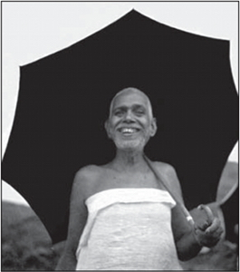

Arunachala in the wet season. It is sometimes considered to be the physical representation of Lord Shiva.
Bhagavan Ramana on his daily walk
One of two existing photos of Lahiri Mahasay

Swami Satyananda, principle disciple of Sri Sri Yukteswar

Swami Ushananda, also known as Pahari Baba, student of Satyananda-ji
Gurudev's sandals, or chappals